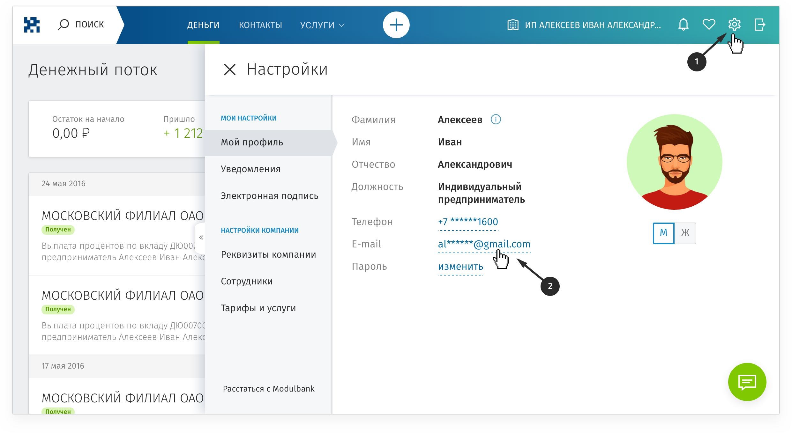

Здравствуйте, {{username}}!
Если вы не нашли ответ на свой вопрос, пишите в чат, и мы поможем.
Мы постоянно обновляем личный кабинет и услуги банка. Чтобы вы не потерялись в изменениях, мы подготовили ответы на часто задаваемые вопросы.
Личный кабинет
- Где посмотреть реквизиты счета?
- Как подключить смс-уведомления?
- Как получить выписку?
- Как получить платежное поручение?
-
Как поменять почту?
Чтобы поменять почту, нажмите «шестеренку» — она в правом верхнем углу, и зайдите в раздел «Мой профиль». В разделе можно поменять адрес почты:
 - Как поменять телефон?
- Как поменять тариф?
- Как купить или продать валюту?
- У меня есть еще одна компания. Как открыть для нее счет?
- Как подписать несколько платежей одновременно?
- Где посмотреть договор обслуживания в банке?
Деньги и счет
- Какой процент на остаток по счету?
- Когда списывается абонентская плата за счет?
- Где посмотреть лимит на перевод и снятие наличных?
- Как сэкономить на обслуживании?
Переводы
- Как перевести деньги с расчетного счета на карточный?
- Как повторить перевод?
- Как перевести деньги в другой банк?
- Как перевести деньги физлицу?
- Как быстро вы отправляете платежи?
Переводы в валюте
- Как открыть валютный счет?
- Сколько стоит валютный счет?
- Какая комиссия при оплате картой в валюте?
- Как купить или продать валюту?
- Что такое валютный контроль?
Банковская карта
- Почему у меня два счета: расчетный и карточный?
- Для чего нужна карта?
- Сколько стоит обслуживание карты?
- Как внести наличные на карту?
- Где снять наличные с карты?
- Какая комиссия за внесение наличных на карту?
- Какая комиссия при оплате картой в валюте?
- Как перевыпустить карту, если она потерялась?
- Как выпустить карту для сотрудника?
Проверка банка
- Почему банк запрашивает документы?
- Как избежать проверки?
- Почему вы заблокировали мой счет?
- По какому праву вы меня проверяете?
- Какие документы нужны для проверки?
- Мне нужен официальный запрос!
- Как долго идет проверка?
- Куда присылать документы?
- В каком формате присылать документы?
- Что будет, если я не пришлю документы и закрою счет?
- Не могу прислать выписку со счета в другом банке, потому что закрыл счет. Что делать?
- Я должен оплатить счет партнера, а вы заблокировали счет. Что делать?
- Как оплатить налоги, если вы заблокировали переводы?
- Как закрыть счет?